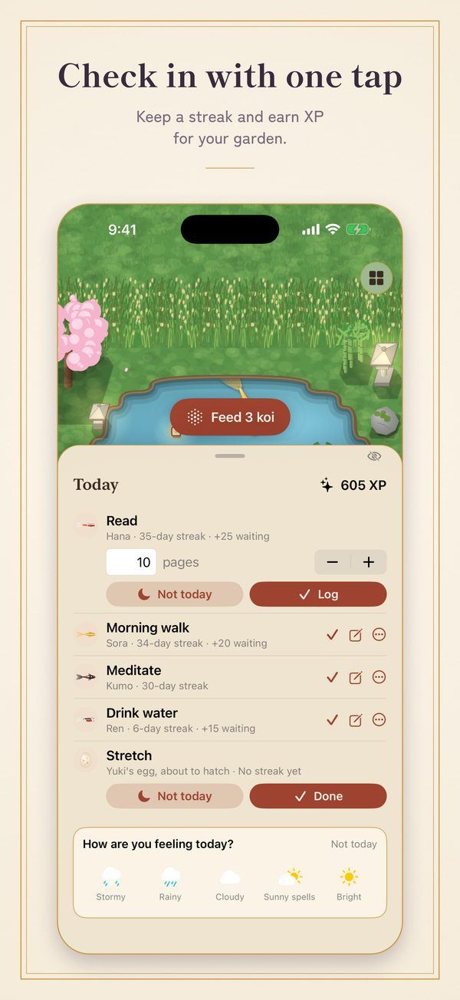
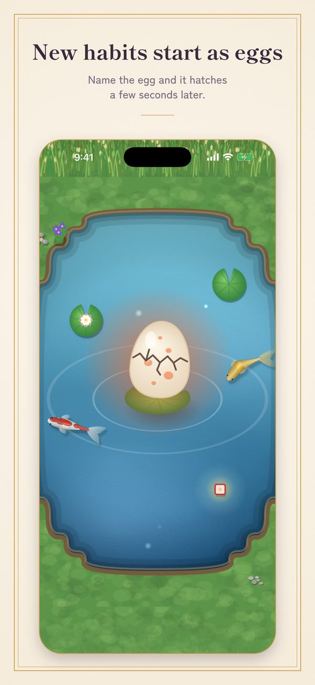
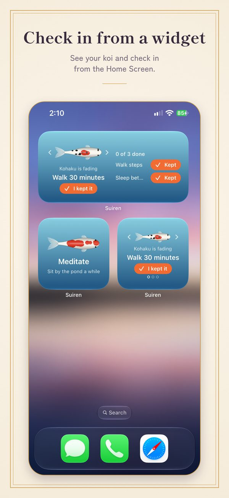
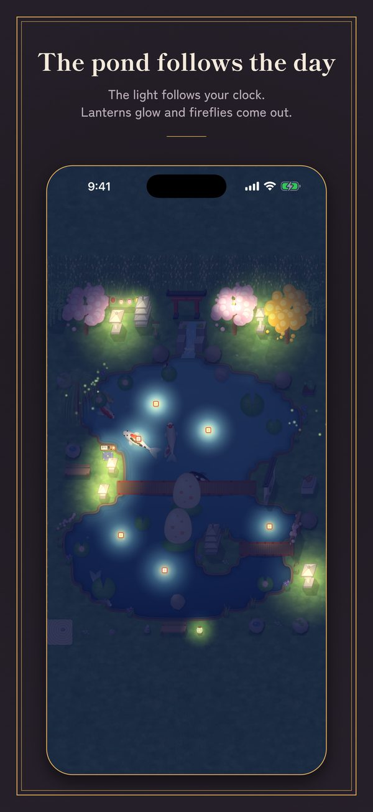
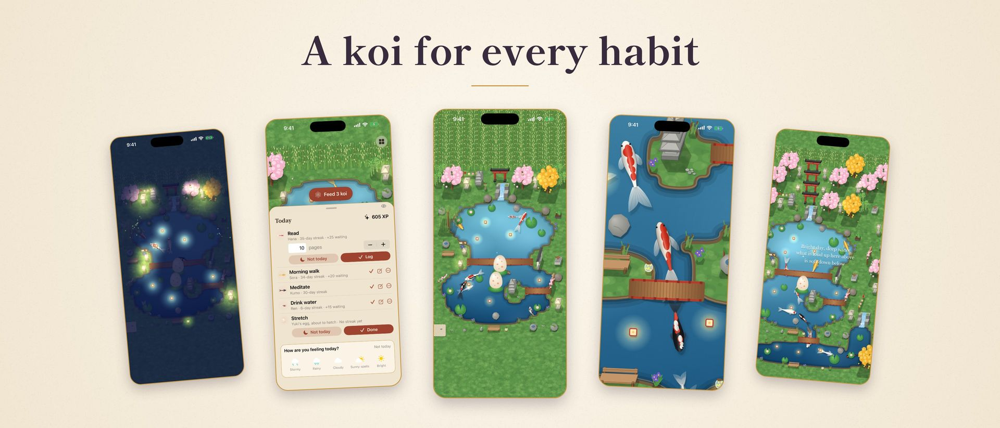

Habit tracker for iPhone
Raise a koi,
keep a habit.
Every habit hatches its own koi. Keep it up and your koi grows, and the pond you build around it grows too.
Habit tracker for iPhone
Every habit hatches its own koi. Keep it up and your koi grows, and the pond you build around it grows too.
How it works
No points to chase and no red Xs. Just a fish that's glad you came back.
Name it, and a few seconds later your koi hatches into the pond.
One tap a day. Your koi grows from fry to elder and learns new tricks.
Spend the XP you earn on bridges, lanterns, trees and lily pads.
A look inside








Made to be gentle
Pick the days a habit is due. The pond sitter minds your koi while you're away.
Set the phone down. Words float on the water and the koi circle them.
Check in from the Home Screen, or let steps, sleep and workouts do it for you.
No account, no ads, no tracking. Your habits stay on your iPhone.

Questions
Yes. You can keep up to 3 habits for free. Suiren+ raises that to 15 and adds a bigger starting plot.
Your koi waits for you. Set rest days, send the pond sitter while you travel, or choose Peaceful mode in 1.5 so missed days never cost anything.
No. There's no sign-up. Your pond lives on your iPhone, with an optional iCloud Drive backup.
Free on the App Store, for iPhone.